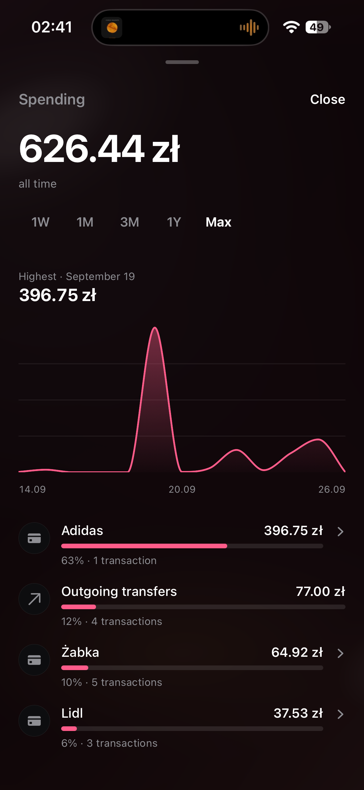
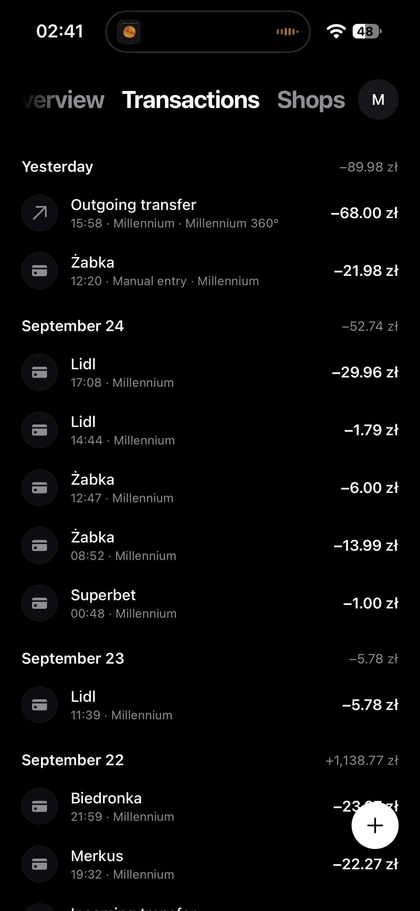

Zobacz przepływ pieniędzy
Wydatki, wpływy, historia i wykresy pomagają odnaleźć wzorce bez udawania salda bankowego.
BankStats / finanse osobiste
BankStats porządkuje transakcje z obsługiwanych powiadomień bankowych i pokazuje, gdzie płyną Twoje pieniądze. Bez łączenia konta bankowego.
Pierwsza obsługiwana konfiguracja: iPhone i Bank Millennium.

BankStats na iPhonieRzeczywisty ekran aplikacji
Zajrzyj do środka
Od szybkiego przeglądu po szczegóły pojedynczego zakupu. Wybierz ekran, żeby zobaczyć go z bliska.
Wydatki, wpływy i przepływ pieniędzy na jednym ekranie.

Wykres wydatków i ich podział według źródeł.

Podgląd ekranu aktywnego planu Premium.

Miesięczny limit, wykres i szczegóły zakupów.

Codzienne operacje uporządkowane według dat.

Miejsca, w których wydajesz najwięcej.
Po prostu więcej jasności
BankStats skupia się na codziennych decyzjach i daje Ci kontrolę nad danymi.
Wydatki, wpływy, historia i wykresy pomagają odnaleźć wzorce bez udawania salda bankowego.
Treść obsługiwanych powiadomień jest interpretowana na urządzeniu. Do synchronizacji trafiają znormalizowane transakcje.
Możesz poprawiać transakcje, eksportować dane i usunąć konto. Blokada aplikacji oraz Tryb prywatny chronią widok kwot.
Jak działa
Nie prosimy o login ani hasło do banku. Konfigurację powiadomień wybierasz samodzielnie.
Na iPhonie dodaj automatyzację Skrótów dla obsługiwanych powiadomień Banku Millennium. Aplikacja prowadzi Cię przez kolejne kroki.
BankStats pokazuje zaobserwowane wydatki i wpływy. Możesz też dodać transakcję ręcznie lub poprawić zapis.
W dowolnym momencie wyeksportujesz dane, odłączysz urządzenie lub usuniesz konto w aplikacji.
Prywatność od początku
BankStats buduje obraz przepływów na podstawie obsługiwanych powiadomień i ręcznych wpisów. Nie pokazuje rzeczywistego salda rachunku ani nie gwarantuje pełnej historii operacji.
Przeczytaj politykę prywatności